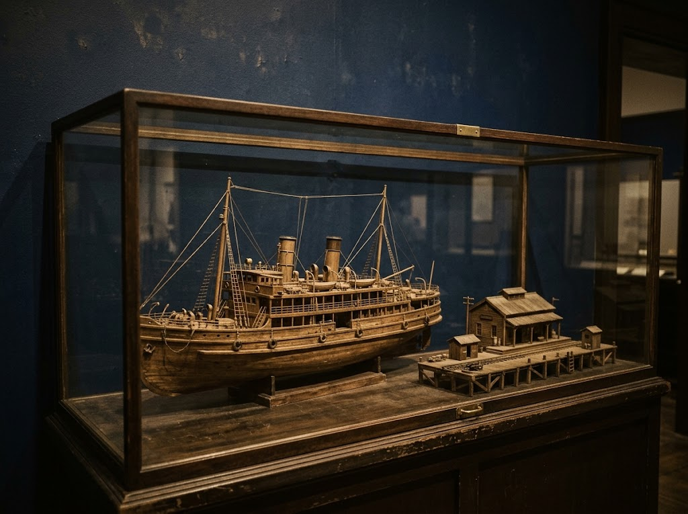
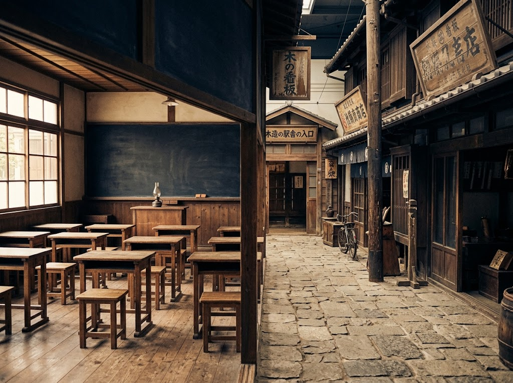

稚泊航路の資料
かつて稚内と樺太を結んでいた稚泊航路。その歴史をたどる船舶や桟橋駅の模型を展示しています。海を渡った人々の旅路に思いを巡らせてください。
国境のあった時代を、いまに伝える。
入館無料
かつて、この海の向こうに
日本の国境がありました。
稚内市樺太記念館は、南樺太の歴史と人々の暮らしを伝える記念館です。明治以降の開拓の歩み、稚内と樺太を結んだ稚泊航路、大正・昭和の街の風景。ひとつひとつの資料が、あの時代の空気を静かに語りかけます。
展示の中心は、一般社団法人全国樺太連盟から寄贈された貴重な資料の数々。稚内市が収集を進め、稚内副港市場の2階に開館しました。どなたでも無料でご覧いただけます。

かつて稚内と樺太を結んでいた稚泊航路。その歴史をたどる船舶や桟橋駅の模型を展示しています。海を渡った人々の旅路に思いを巡らせてください。

1階では、旧豊原中学校の教室や当時の駅舎、昭和の街並みを再現。懐かしい風景のなかを歩きながら、当時の暮らしを身近に感じられます。
全国樺太連盟からの寄贈品を含め、明治以降の樺太の開拓と生活を紹介するパネル、写真、書籍、収集品を約2,000点展示しています。
無料の博物館。入口で名前を記入して見学。樺太の日本の統治の歴史や遺物が展示してあります。映像作品や星空の写真展示もありました。資料は見応えがあり、楽しめました。
車のない場合、タクシーで上がり、帰路は「氷雪の門樺太島民慰霊碑」まで車道を下り、そこから北門神社までは遊歩道で下ると良いです。
無料で樺太を学べる。日本に国境があった時代。国境には日露国境標石が置かれていた。レプリカが見られる。今でも当時の台座は残っているらしい。宮沢賢治は樺太を列車で旅して銀河鉄道の夜を書き上げたとも言われている。ガンダムコラボマンホールカードもらえる。実物も建物入口にあり。